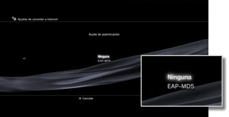
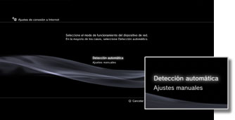
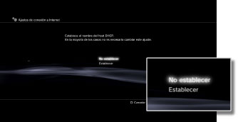
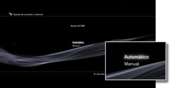
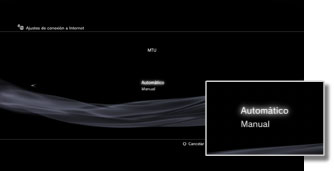
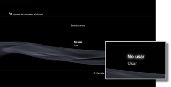
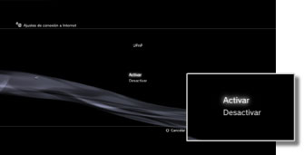

Ajustes > Ajustes de red > Ajustes de conexión a Internet (ajustes avanzados)
Ajustes de conexión a Internet (ajustes avanzados)
Si no es capaz de conectarse a Internet con los ajustes básicos, cámbielos según sea necesario. Ajuste cada elemento para adaptarlo a su entorno de red particular.
1. |
Seleccione |
|---|---|
2. |
Seleccione [Ajustes de conexión a Internet]. |
3. |
Seleccione [Personalizados]. |
 (Ajustes) >
(Ajustes) >  (Ajustes de red).
(Ajustes de red).Método de conexión
Puede ajustar el método de conexión a Internet. Este ajuste está disponible únicamente en los sistemas PS3™ equipados con la función de red LAN inalámbrica.

| Por cable | Establezca una conexión de red mediante un cable Ethernet. |
|---|---|
| Inalámbrico | Establezca una conexión de red mediante una red LAN inalámbrica. |
Ajustes WLAN
Permite ajustar el SSID del punto de acceso. Este ajuste está disponible únicamente para los sistemas PS3™ equipados con función de LAN inalámbrica.

| Escanear | Permite buscar un punto de acceso cercano. Seleccione este ajuste cuando no conozca el SSID del punto de acceso. El sistema detectará puntos de acceso cercanos y mostrará información sobre el SSID y los ajustes de seguridad. |
|---|---|
| Introducir manualmente | Permite especificar el punto de acceso mediante la introducción manual de su SSID con un teclado. Seleccione este ajuste si conoce el SSID. |
| Automático | Utilice la función de ajuste automático del punto de acceso. Este ajuste está disponible únicamente en las regiones en las que están a la venta sistemas PS3™ compatibles con esta función. Seleccione este ajuste cuando utilice un punto de acceso compatible con la configuración automática. Siga las instrucciones que aparecen en pantalla. |
Ajuste de seguridad WLAN
Permite ajustar una clave de encriptación para un punto de acceso. Este ajuste está disponible únicamente para los sistemas PS3™ equipados con función LAN inalámbrica.

| Ninguna | Para no ajustar ninguna clave de encriptación. |
|---|---|
| WEP | Para ajustar una clave de encriptación. La clave de encriptación puede introducirse en la siguiente pantalla. La clave de encriptación se visualiza como una serie de asteriscos. |
| WPA-PSK / WPA2-PSK |
Ajuste de autenticación
Estos ajustes están disponibles únicamente en los sistemas PS3™ que están a la venta en Corea y en los sistemas PS3™ equipados con la función LAN inalámbrica.

| Ninguna | Para no ajustar información sobre la autenticación. |
|---|---|
| EAP-MD5 | Permite ajustar información sobre la autenticación cuando se utilicen servicios WLAN públicos. Introduzca su ID de usuario y contraseña en la siguiente pantalla. Para obtener más detalles, consulte la información suministrada por el proveedor de servicios WLAN públicos. |
Modo de funcionamiento Ethernet
Permite ajustar la velocidad de transferencia de datos de Ethernet y el modo de funcionamiento. Por lo general, seleccione [Detección automática].

| Detección automática | Permite establecer automáticamente los ajustes básicos. |
|---|---|
| Ajustes manuales | Permite ajustar manualmente la velocidad de transferencia de datos de Ethernet y el modo de funcionamiento. |
Ajuste de dirección IP
Permite ajustar el método de obtención de una dirección IP al conectarse a Internet.
| Automático | Permite utilizar la dirección IP asignada por el servidor DHCP. Es posible introducir el nombre de host del servidor DHCP en la siguiente pantalla. |
|---|---|
| Manual | Permite ajustar la dirección IP manualmente. Es posible introducir los valores para la dirección IP, la máscara de subred, el router predeterminado y el servidor DNS principal y secundario en la página siguiente. |
| PPPoE | Permite conectarse a Internet mediante PPPoE. Puede introducir su ID de usuario y contraseña en la siguiente pantalla. |
DHCP
Establezca el nombre de host DHCP. Seleccione generalmente [No establecer].

| No establecer | No establezca el nombre de host DHCP. |
|---|---|
| Establecer | Establezca el nombre de host DHCP. |
Ajuste de DNS
Permite ajustar el servidor DNS.

| Automático | Permite obtener automáticamente la dirección del servidor DNS. |
|---|---|
| Manual | Permite introducir manualmente la dirección del servidor DNS. |
MTU
Permite configurar el valor correspondiente a MTU utilizado durante la transmisión de datos. Por lo general, seleccione [Automático].

| Automático | Permite ajustar el valor de MTU automáticamente. |
|---|---|
| Manual | Permite especificar el tamaño máximo de los paquetes de datos (en bytes) que podrán enviarse en una transmisión. |
Servidor proxy
Permite ajustar el servidor proxy que desea utilizar.

| No usar | Para no utilizar un servidor proxy. |
|---|---|
| Usar | Para utilizar un servidor proxy. Puede introducir la dirección del servidor proxy y el número de puerto en la siguiente pantalla. |
UPnP
Permite activar o desactivar UPnP (Universal Plug and Play).

| Activar | Permite activar UPnP. |
|---|---|
| Desactivar | Permite desactivar UPnP. |
Nota
Si está ajustado en [Desactivar], es posible que la comunicación con otros usuarios esté restringida cuando utilice la función de chat de voz o vídeo o las funciones de comunicación de los juegos.